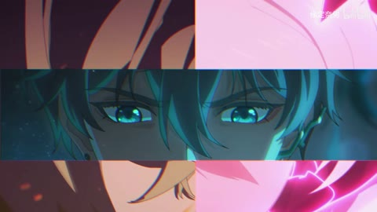
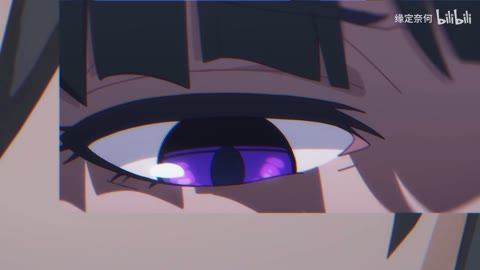
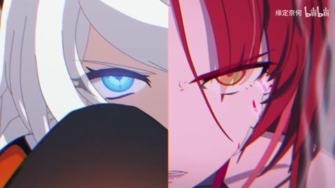
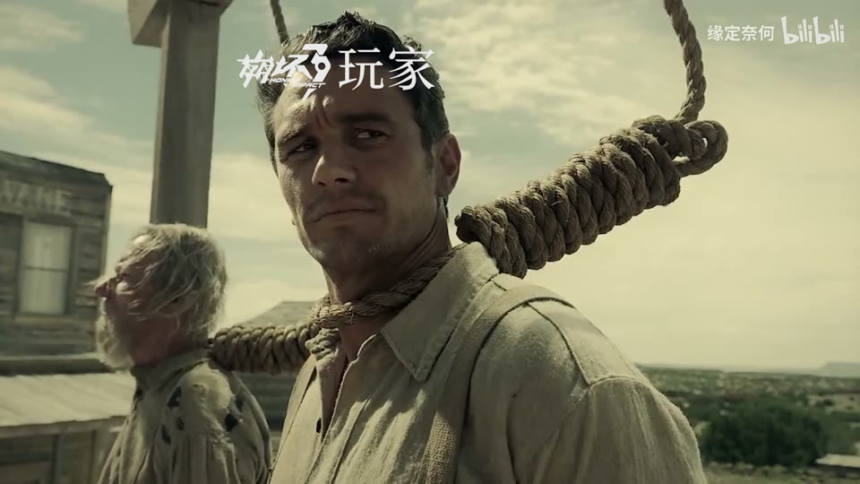
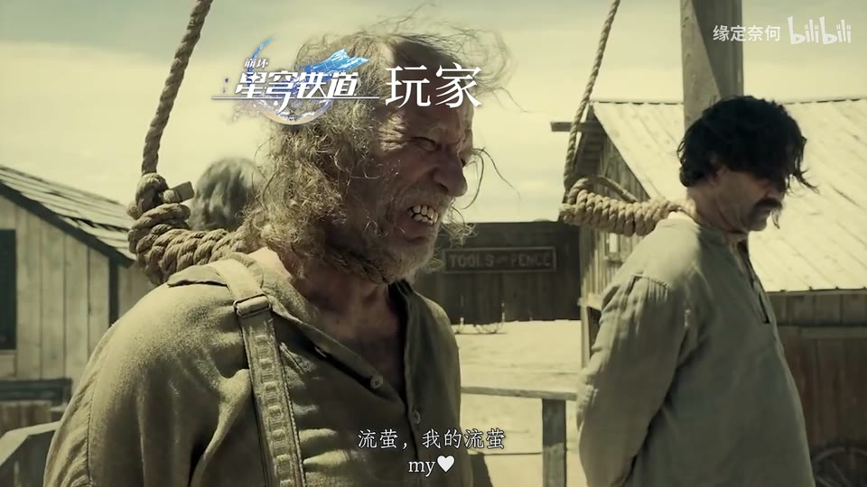
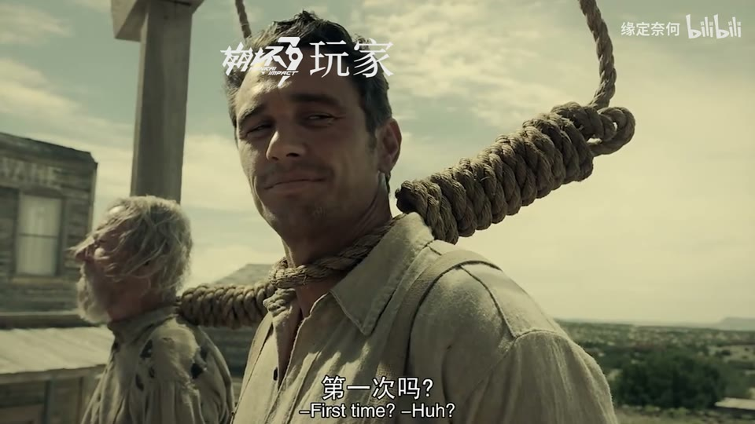

分析单元 01 / 0—13秒
黑场／真人引子／游戏CG／暗横条
实际观察
短黑后真人访谈字幕，转角色与高彩夜景，人物脸部有横向暗条。
表达作用（教学解读）
把短暂破坏作为失控、断裂、冲突或数字材质的提示。
具体应用场景
赛博题材、记忆中断、身份不稳、高潮强调；也可短时掩护连接。
复现建议（非原作者工程还原）
语义选材、基本剪接与半透明矩形条；真人字幕可能来自源节目。
直出判断：基本剪接/暗条容易；游戏美术需素材
常见误用：全程持续导致麻木；色散让脸和字长期看不清；把所有亮度变化算成切镜。
H18 / 主要视觉研究样本
眼位对齐和大脸／小窗的比例，帮助密集游戏CG保持焦点。参考谱系和原CG光效应从新增拼贴中分开。

从画面里找依据
实拍开场、游戏CG、眼部拼贴与冷暖对照提供构图变化，和所参考作品的设计联系明确。
眼部矩形、横分屏和线稿插入保持脸部焦点；高亮能量画面不按缩图认定全程细节。
战斗、运动、竞速、预告、产品性能演示、情绪冲突的高潮。
教学提问：观众能指出谁在攻击、朝哪边、是否击中吗？哪些是原素材的动作，哪些才是新增剪接或合成？
图像标出取样时间，对应观察中的关键状态。单帧不能独立证明运动，连续性请结合摘录。表达作用与应用场景是教学解读，复现路线是建议，不是原作者工程还原。
分析单元 01 / 0—13秒
短黑后真人访谈字幕，转角色与高彩夜景，人物脸部有横向暗条。
把短暂破坏作为失控、断裂、冲突或数字材质的提示。
赛博题材、记忆中断、身份不稳、高潮强调；也可短时掩护连接。
语义选材、基本剪接与半透明矩形条；真人字幕可能来自源节目。
直出判断：基本剪接/暗条容易；游戏美术需素材
常见误用：全程持续导致麻木；色散让脸和字长期看不清；把所有亮度变化算成切镜。



H18 · 原作约13—17秒
分析单元 02 / 13—17秒
不同角色眼部用矩形窗逐层覆盖，接双眼满屏、左右分屏、中央横条、叠套小窗，再接双色脸和黄色线稿眼睛。
让多个时间、视角或人物关系同时出现；通过对位建立联系，而非只提高画面数量。
记忆、对话、关系对照、主观视点、多人角色介绍、跨素材呼应。
按眼睛位置缩放裁切，多矩形mask错峰出现，水平/竖直布局和线稿阈值；精确源图需准备。
直出判断：矩形拼贴/对位/线稿简版容易；素材筛选和眼位匹配需人工调整
常见误用：窗口太多无主次，眼位错位、边框挤脸，层的出现没有叙事理由。
分析单元 03 / 17—39秒
游戏战斗、眼睛特写、霓虹角色与明亮光束远景轮换，36附近虚焦光爆，39处小窗覆盖广景。
决定什么值得看、什么退到感受层；清晰与模糊、占满与留空之间的关系塑造语气。
回忆、亲密、孤独、人物介绍、信息减负、画面间的呼吸。
原游戏CG选镜与画中画、柔光/缩放/模糊；原招式/粒子单列来源。
直出判断：画中画/柔光/缩放容易；原CG不能代码一键复刻
常见误用：模糊所有层；细字落在高亮区域；浅色误认为高级；没有清楚的主焦点。
分析单元 04 / 39—63秒
红色地形、射击、人物近景及机甲蓝电光黄光束轮换，55.633附近黑白冲击帧，56.7附近过曝亮度脉冲。
让能量、方向或主次可见；清楚的字芯和主体轮廓应保留。
战斗、魔法、科技、梦境、舞台、标题强调、人物焦点。
选取游戏官方动作素材、短镜连接、曝光/阈值效果；需对照原片确认哪些冲击帧本来就有。
直出判断：简化曝光/黑白冲击容易；机甲几何/动作/电弧归属待原片对照
常见误用：只加大模糊半径；光源不影响周围环境；发光覆盖所有细节；把原片光效当新增。
分析单元 05 / 63—84秒
光爆遮满，角色侧脸与电光动作、蓝色晶体、暖金人物，后蓝色月夜和持剑双人。
以观看距离和运动方向改变心理距离，让观众发现、逼近、远离或重新理解对象。
环境揭示、人物情绪、冲刺、回忆、同一张图中的细节发现。
高光遮挡连接、暖冷镜头对比，源角色动作/晶体/金光由CG提供。
直出判断：白光转场/基本调色容易；源晶体场景和角色难
常见误用：每镜都推近；速度变化没有事件依据；把同镜转动误算为剪辑；光流扭曲当成流畅。
分析单元 06 / 84—99.5秒
巨大金龙和红色人物飞行，91.6附近能量爆发，92.467转举剑人物，后光芒遮满。
通过变化与稳定的比例让信息有轻重。视觉密度来自切镜、版式与局部动画三个层面，不只靠刀数。
所有形式；尤其高潮前的蓄力、解释段的阅读、回忆段的停留和快慢对照。
原片宏大场面选取、动作衔接，简化能量线和光遮罩可合成。
直出判断：能量光/遮挡容易；完整金龙与战斗空间需源CG
常见误用：全片等密度；把闪帧当新镜；高切速被当成质量分；没有稳定段供观众理解。



H18 · 原作约99.5—108.483秒
分析单元 07 / 99.5—108.483秒
白场后电影绞刑台人物，头顶叠游戏名与玩家，底部小字/问号，形成结尾梗。
通过变化与稳定的比例让信息有轻重。视觉密度来自切镜、版式与局部动画三个层面，不只靠刀数。
所有形式；尤其高潮前的蓄力、解释段的阅读、回忆段的停留和快慢对照。
电影选段、文字贴图与基础跟踪；字牌位置需随人物微调。
直出判断：文字/简易跟踪容易；电影人物需素材
常见误用：全片等密度；把闪帧当新镜；高切速被当成质量分；没有稳定段供观众理解。
保留原研究的多段局部摘录。片段含音轨不代表已听审；本资料不评价音乐卡点或对白节奏。
55.1–57.1秒5次、91.4–93.4秒2次，13–17秒两次主结构转换；局部眼窗和闪光分开记录。
把镜头连接、版式更新、局部图层变化和镜内运动分开记录。所查窗口是下限，不是全片平均或AI／人工排名。
原始逐窗记录 →用三个动作片段组成8秒“准备—碰撞—结果”，先不用特效；再仅加一次光效和一次短停顿，检验是否更清楚。
先写“我希望观众明白／感到什么”，再选本页的一种手法。完成无效果基础版后再加层；解释新增层带来的收益和代价。
打开练习与复盘表 →实际检查范围：实际查看37张3秒概览0–108（3表），55.1–57.033及91.4–93.333共60密集帧（4表），13–16.933另60帧（15/s，4表）全看。源108.483秒3840×2160/60fps，页面时长约1:49；三段4秒摘录。未听审、未连续完整音画观看。
制作线索：缘定奈何，第一方240万，2024-02-15；简介提供BGM名称和《崩溃边缘》BV17K4y167nK参考，剪辑/游戏标签。可支持人工剪辑候选，不证明全流程零AI，也不把游戏官方CG算作UP制作。
边界：页面明确参考崩溃边缘；保留主要样本但不当独立原创设计证明。CG动作、原始特效不是UP全部新增，60fps不等于每秒60镜。
播放快照保存时间（UTC）：2026-10-20T23:53:14.194234+00:00。H30制作方式为推定；同源改编、仿作和转载依原记录标注。
原始案例记录 · 选样表笔记仅尝试保存在本机浏览器；浏览器策略可能限制本地文件存储，重要内容请导出。